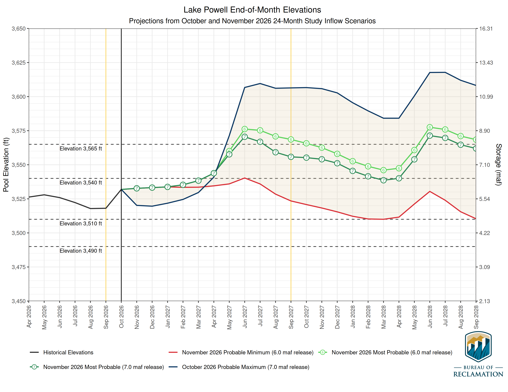
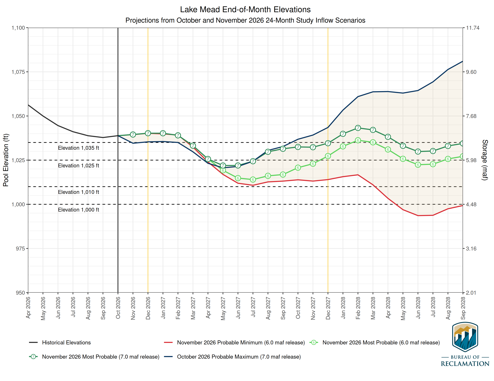

Lake Powell & Lake Mead 24-Month Study
Projections from October and November 2026 24-Month Study Inflow Scenarios
Study Month:
2026-11
Plot Window:
2026-11 to 2028-09
Generated:
2026-11-12 15:25 UTC
Data Source:
Reclamation HDB API
Archived Runs:
2026-11
Lake Powell End-of-Month Elevations
Download PNG
Download PDF

Lake Mead End-of-Month Elevations
Download PNG
Download PDF

Study Run Parameters
Study Month
2026-11
Plot Range
Through 2028-09
Probable Minimum (6.0 maf)
MRID 3343 (Run month: 2026-11)
Most Probable (6.0 maf)
MRID 3342 (Run month: 2026-11)
Most Probable (7.0 maf)
MRID 3344 (Run month: 2026-11)
Probable Maximum (7.0 maf)
MRID 3340 (Run month: 2026-10)
Lake Powell Y-Axis
3450 to 3650 ft
Lake Mead Y-Axis
950 to 1100 ft